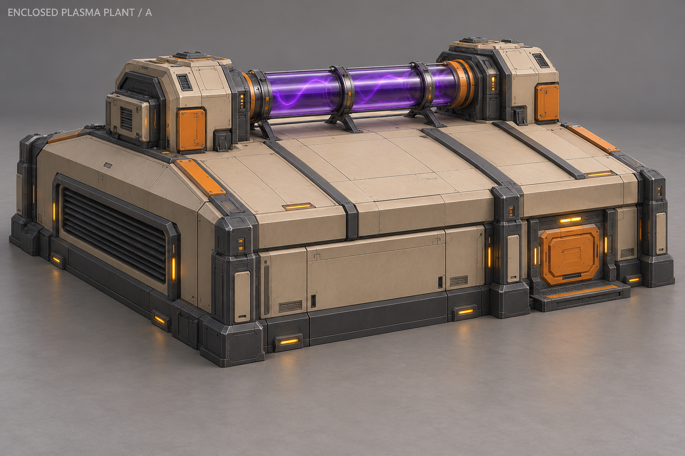
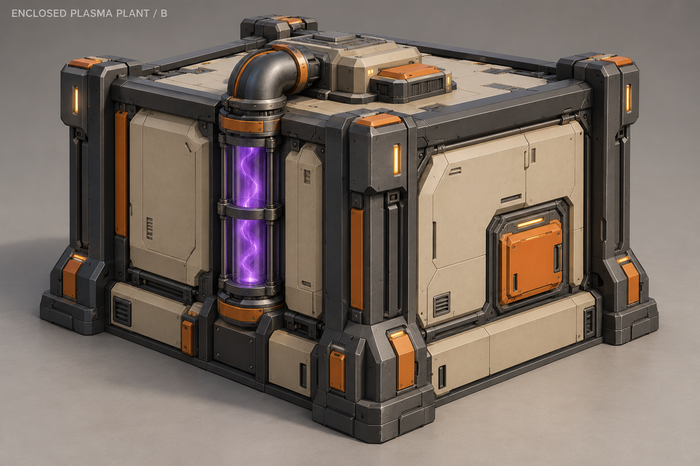
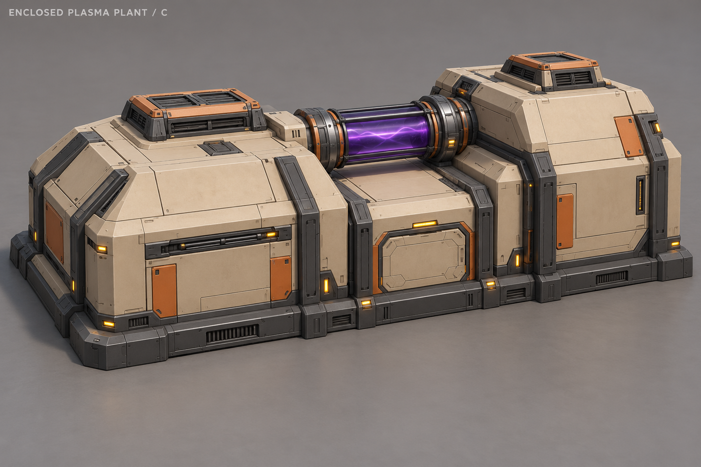
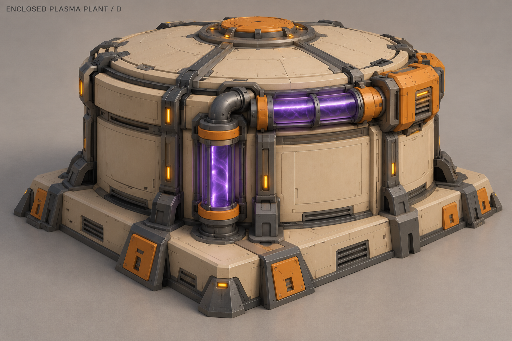
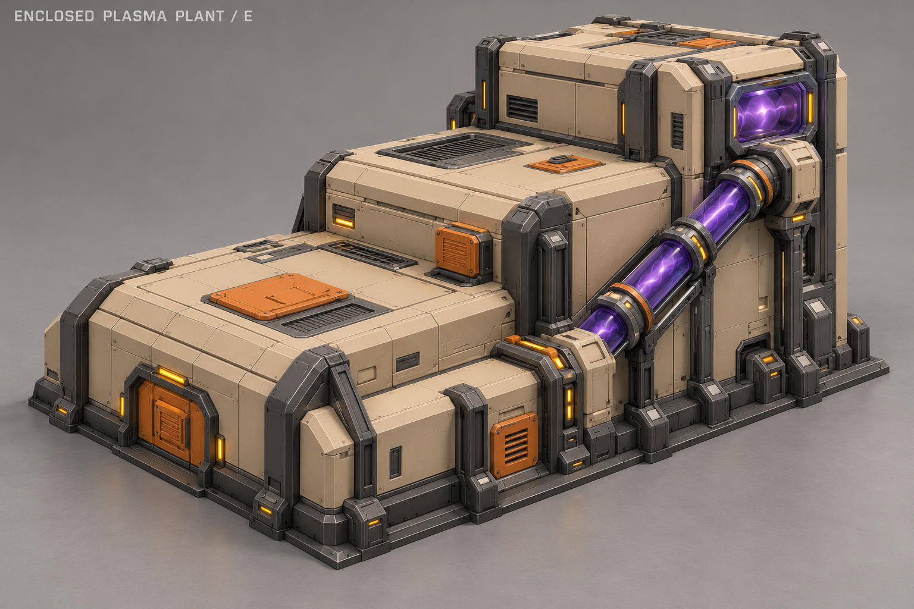
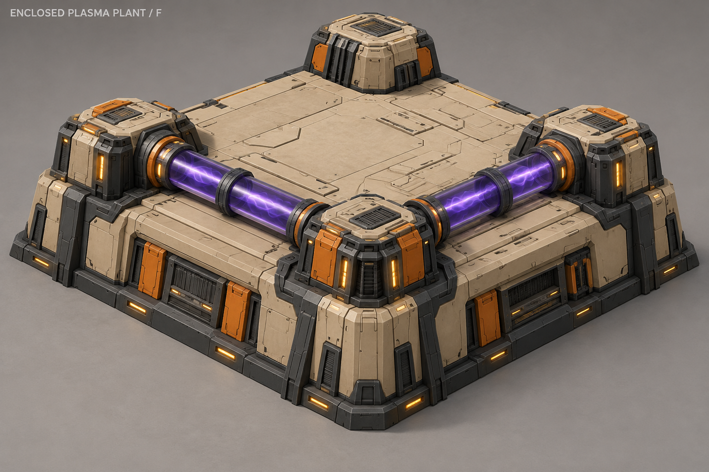

A «Крытый цех»
Низкий крытый цех, прокачка по горизонтальной трубе на крыше.

B «Кассета»
Компактный корпус в раме, вертикальный смотровой канал на фасаде.

C «Двойной корпус»
Два цеховых объёма на сплошном основании, труба между ними.

D «Барабанный цех»
Круглый закрытый завод, видимый трубопровод вдоль стенки.

E «Ступенчатый завод» · ВЫБРАН
Ступенчатый корпус с наклонным каналом прокачки.

F «Периметр»
Низкий квадратный цех с технологическими блоками по углам и трубами по краям крыши.